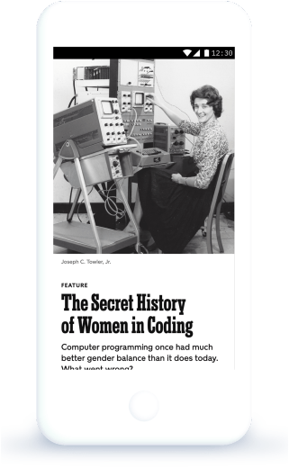
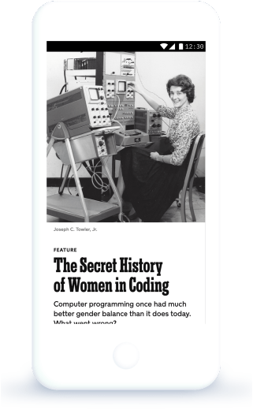

El portal de podcasts que explora el mundo de la programación y la tecnología. Nuevos episodios, todos los jueves cada 15 días.
Un podcast que explora el mundo de la programación. Nuevos episodios, todos los jueves cada 15 días.
 

Our posturings, our imagined self-importance, the delusion that we have
some privileged position in the Universe, are challenged by this point
of pale light.
Our planet is a lonely speck in the great enveloping cosmic dark. In our
obscurity, in all this vastness, there is no hint that help will come
from elsewhere to save us from ourselves.